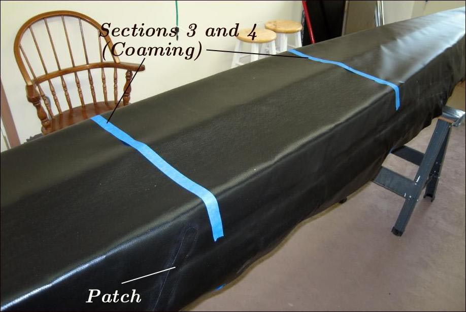

| Sonnet ( Hull Skin) | Menu Last Page Next Page |
|

Mark the location of stations 3 and 4 (coaming) with tape to identify the coaming location after the skin is removed from the strongback. The back of coaming location is at station 4. Also, the fore and aft stringers will be positioned halfway between these marks. Next, the stems will be skinned.
|
|